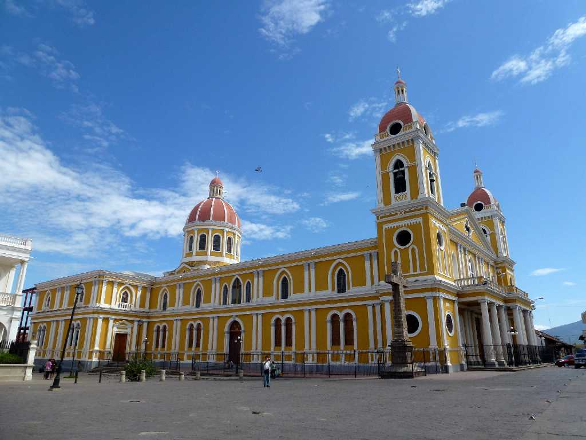
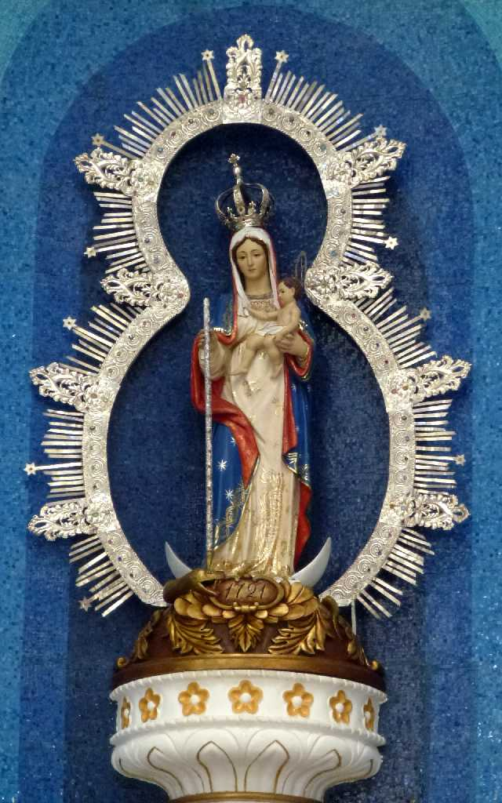
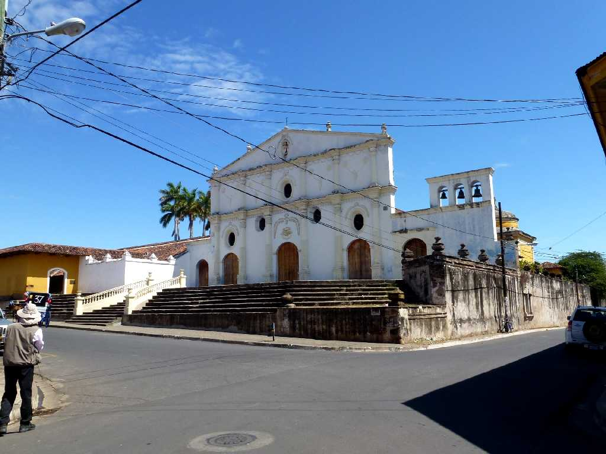
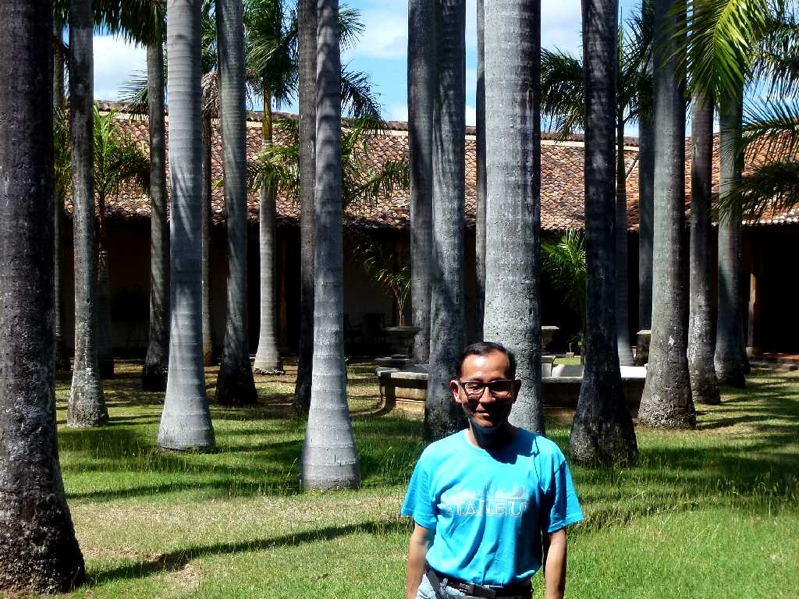

Iglesia Catedral Inmaculada Concepción de María Granada
１６世紀に創られたニカラグア最大の大聖堂

Altar Iglesia Catedral Inmaculada Concepción de María

Convento San Francisco
１５２９年に創られた中米で最も古い教会のサンフランシスコ修道院

February 4 2013 Convento San Francisco